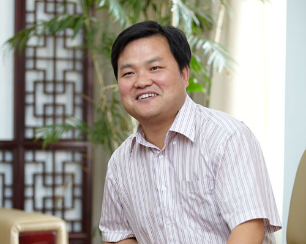

“ Shanghai American School inspires in all students a lifelong passion for learning, a commitment to act with integrity and compassion, and the courage to live their dreams. ”
—— Peiming Yang
The President of Nanjing Senior High School
Welcome from International Department
As Head of School, let me be the first to welcome you to Nanjing Senior High School International Department!
As the oldest and largest international school in Jiangyin, we are host to two vibrant campuses in Pudong and Puxi with unparalleled facilities, a challenging and robust academic program, exceptional faculty committed to the growth and well being of your child, and a rich community spirit.
We are an independent, non-profit school and committed to delivering the best that an American education has to offer.
What does that mean?
We are family-oriented. At the International Department, the parent partnership is a cornerstone of our institution, and we nurture that partnership through numerous school performances and events, an array of parent education sessions, clear communication, responsiveness to individual needs, and a host of opportunities to support the International Department community through the Parent Teacher Student Assocation (PTSA) on each of our campuses.
We care deeply about each unique student in our care. At the heart of an American ethos is the value of individualism: we care who our students are, what matters to them, how they learn best, and what their passions are. The International Department Mission asks that we inspire in all students the courage to live their dreams. We embrace that call as the foundation of our efforts!
We are innovative. We believe that strong academics and progressive education go hand in hand. Our Puxi campus high school hosts the Innovation Institute, a cohort of teachers and students engaged fully in collaborative, interdisciplinary, inquiry-based learning. Design labs and maker spaces on both campuses provide opportunities for students of all ages to engage in creating, engineering, and programming.
We strive for balance in our students’ lives. We couple our strong academic program with a vast array of co-curricular opportunities in athletics, arts, travel, service, and academic competition. Whether your child dreams of excelling at rugby on our extensive playing fields, performing in the newly completed world class performing arts center on the Pudong campus, traveling to the Jacaranda School in Malawi, Africa to do community service, or starting a chess or investment club right at home, he or she can find an outlet for those interests.
We are ambassadors. China is our host country and Shanghai our home. We celebrate that relationship through the hosting of Chinese teachers and administrators studying American pedagogy, student travel in our China Alive program, campus celebrations of Chinese culture, and the nurturing of cultural sensitivity and a respect for diversity in each of our students.
I am in awe of what the International Department has accomplished in its long history and proud of what we accomplish today in our changing world. At a recent parent event, we brought together graduates ranging from the 1940‘s to today. What united them all was an appreciation for the extraordinary foundation that the International Department provided for their futures. Whether you are considering our campus in Pudong or Puxi, I hope that you will take the opportunity to plan a visit and see for yourself what a International Department education has to offer your child and your family.
At the International Department, we build futures. Let us build one for you!
Sincerely,
Head of School